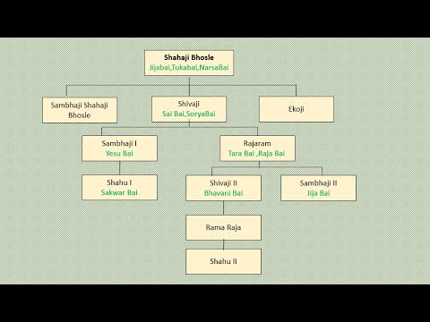

FAMILY OF SHIVAJI MAHARAJ

Shivaji Bhonsale I (Marathi pronunciation , also referred to as Chhatrapati Shivaji,was an Indian ruler and a member of the Bhonsle Maratha clan.
Shivaji carved out an enclave from the declining Adilshahi sultanate of Bijapur that
formed the genesis of the Maratha Empire. In 1674, he was formally crowned the Chhatrapati of his realm at Raigad.
=Over the course of his life, Shivaji engaged in both alliances and hostilities with the Mughal Empire, the Sultanate of Golkonda, Sultanate of Bijapur
and the European colonial powers. Shivaji's military forces expanded the Maratha sphere of influence, capturing and building forts, and forming a Maratha
navy. Shivaji established a competent and progressive civil rule with well-structured administrative organisations. He revived ancient Hindu political
traditions, court conventions and promoted the usage of the Marathi and Sanskrit languages, replacing Persian in court and administration.
Shivaji's legacy was to vary by observer and time, but nearly two centuries after his death, he began to take on increased importance with the emergence
of the Indian independence movement, as many Indian nationalists elevated him as a proto-nationalist and hero of the Hindus.